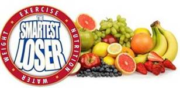

Nutrition
Katie Marger, a nutritionist with Diamond Nutrition visited and gave an introduction to nutrition. Below are the documents she provided during the session.
Katie will be available for additional one-on-one sessions. Reach out to her via Katie@diamondnutritioncounseling.com to schedule your one-on-one.
Nutritionist Documents
Hand outs and power point used at the presentation.
- Lunch and Learn powerpoint
- Snacks for Work
- Snacks Options
- SMART Goals Worksheet
- 3-Day Clean Eating Recipes
Katie's Corner
Weekly tips for success from our friendly nutritionist.
- 11 Healthy Foods Nutritionists Stock In The Freezer
- 5 Ways to Keep Eating on the Go from Making You Fat
Smartest Loser Tip Documents
A few extra tips and ideas from the wellness team.
 Questions?
Questions?
If you have any questions, please email your Wellness Advocate at: wellness@emoneyadvisor.com